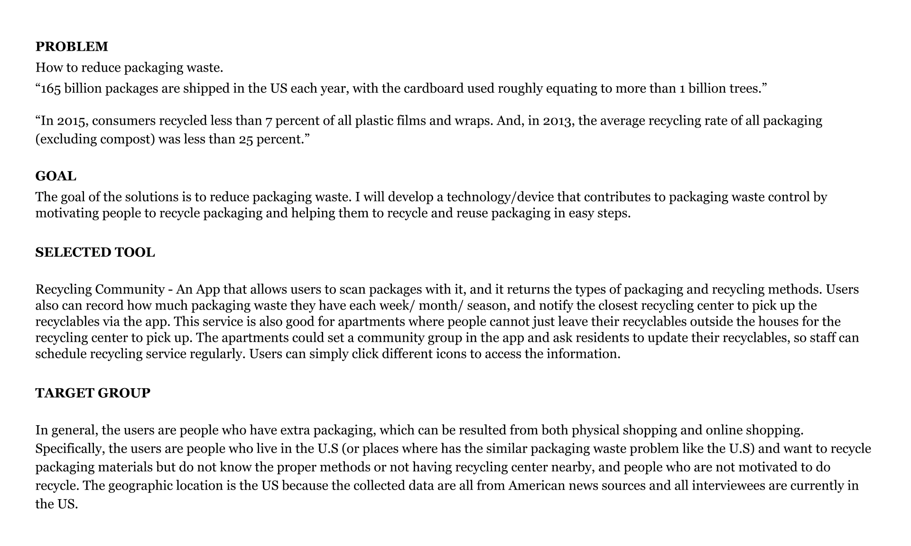
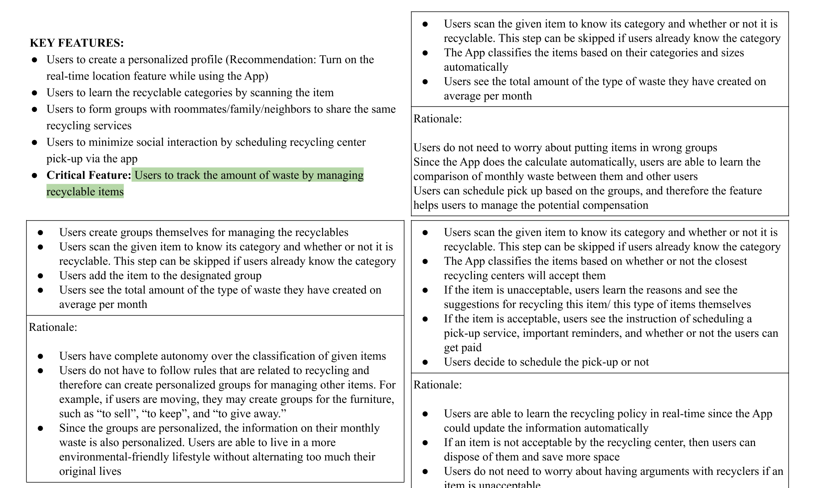
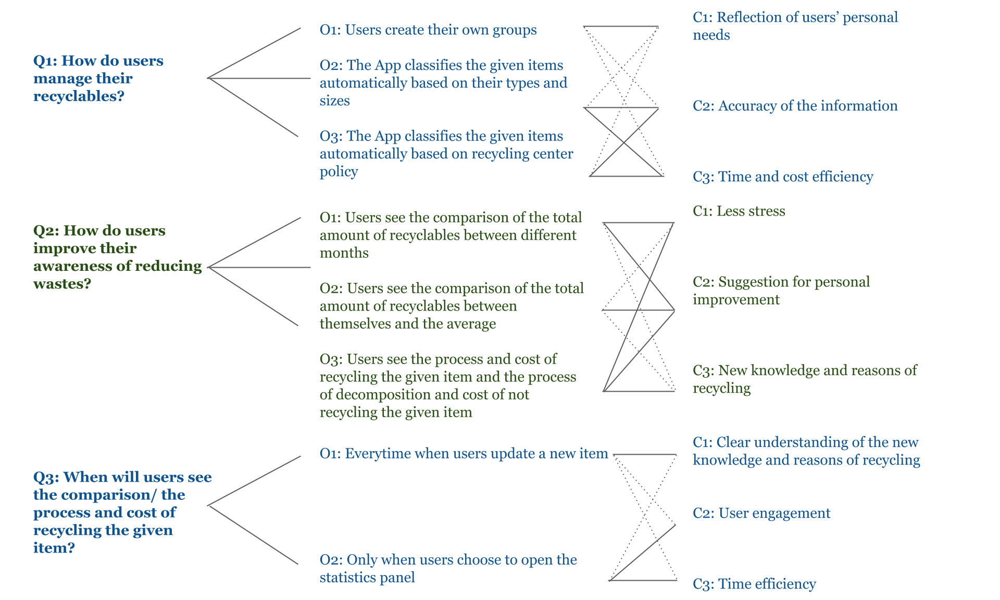
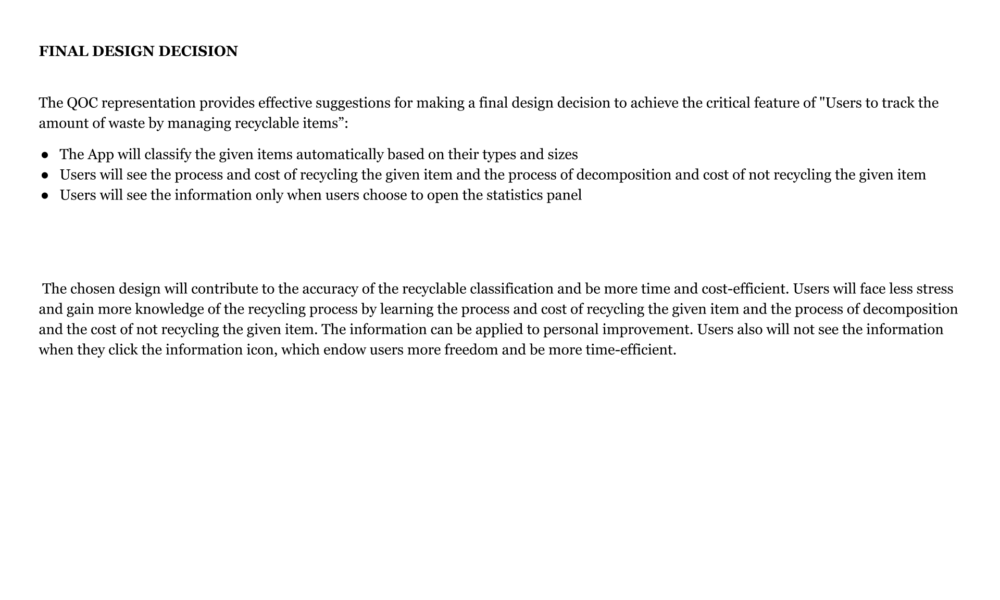
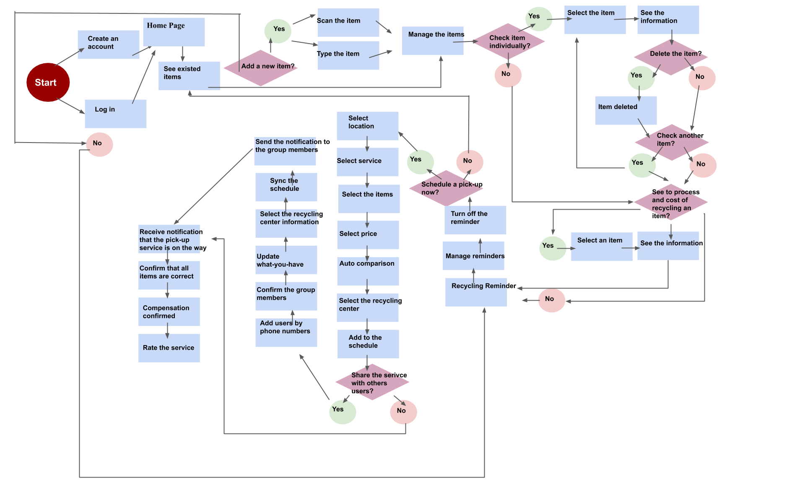

Thank you for visiting my portfolio!
I graduated from college last year with a bachelor's degree in psychology,
and I am currently earning my Master degree in Information Science
at the University of Michigan Ann Arbor.
This page hosts the UI/UX projects that I have done in school.
Link to my Github page: github.com/wyue20
I622 - Needs Assessment and Usability Evaluation
- Mapping the interaction flow (a diagram of the system's reaction to user input) and comparing the features and usability of your system with competitors' systems
- Embodying a set of target users and what they would want to do with the system and using checklists and “heuristics” to evaluate the system from several points of view
- Surveying users for their opinions and experiences and doing user testing of typical tasks on the system
- Incorporating new and emerging evaluation methods such as log analysis and online testing
SI501 - Contextual Inquiry and Consulting Foundations
- To collect, represent, and analyze qualitative data about the work process and service by conducting semi-structured interviews; observing work processes; processing interview notes into discrete pieces of qualitative data
- Managed an external client-based relationship and timeline and communicated findings and recommendations in oral and written form
- Generated, evaluated, and recommended specific recommendations to improve the effectiveness and efficiency of the work process and service
I582 - Introduction to Interaction Design
- To identify a design problem and create a digital prototype of an App that could solve/ mitigate the issue
- Conducted background research, competitive analysis, targeted user group interview, and need-finding
- Created sketches, storyboard, scenario, and personas to develop the prototype




